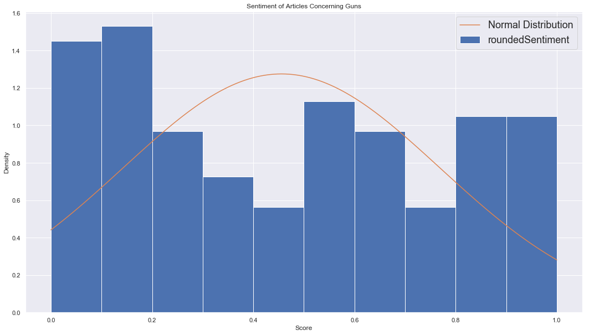

Noah B Johnson
Data Analysis & Visualization, Dr. Kent D. Lee
Luther College, Decorah IA
According to Gallup polls, 45% of Americans see “a great deal of bias” in the current news media. For reference, that number was 25% in 1989. With numbers like it’s easy to see that the concept of “fake news” is relevant to many Americans, but how can we measure bias in the media?
Sites like mediabiasfactcheck.com try to examine the bias of various news outlets and report on their findings. They use a variety of methods including identifying biased wording, story choices, and factuality. There are a few other sites with different methodologies, but the reality of social media echo-chambers means that their impact on media consumers is negligible.
In this report, I collected and examined articles from two biased news sites. Theblaze.com is a conservative news platform founded by conservative commentator Glenn Beck. On the liberal side, thinkprogress.org is a progressive political news blog run by the Center for American Progress, according to wikipedia, a public policy research and advocacy organization which presents a liberal viewpoint on economic and social issues. Both of these sites are near the extreme end of their respective political biases, and they both often have their content go viral on social media. This makes them a perfect couple for analyzing the issue of media bias.
I used the pre-trained text analysis models from indico.io and the Natural Language Toolkit(NLTK) to generate variables for analysis. Using these variables, I created visualizations using matplotlib and seaborn to visually identify patterns in the data. The methods used in this report, although quantitative, are not neccessarily statistically valid, and may include subjective suppositions.

 mediabiasfactcheck.com
mediabiasfactcheck.com

 mediabiasfactcheck.com
mediabiasfactcheck.com
The models I used for feature construction were pre-trained on unknown data sets. Due to the nature of pre-trained models, there may be a degree of bias against various viewpoints in the results of my analysis. I've done my best to mitigate this issue by normalizing where possible. However, there still remains a potential for bias, as the models were not tested for objectivity.
The terms of service on theblaze.com specifically prohibit the type of programmatic access and scraping used in this project. Both sites also prohibit archiving, downloading, or reproducing their content.
The law on programmatic scraping is murky at best, but I consider my access and use of article content and media to be protected under fair use and the first amendment for the sole purpose of academic research. This position is supported in earnest by CHRISTIAN W. SANDVIG, et al. v. JEFFERSON B. SESSIONS III, in his official capacity as Attorney General of the United States.
The analysis provided in this report is solely the responsibility of the author, and does not represent the views or opinions of Luther College or its faculty.
To collect data from theblaze.com articles, I took advantage of Wordpress’s predictable archival URL structure. A list of all the articles published in a day is available at theblaze.com/news/[year]/[month]/[day]. I was able to iterate through the dates to collate a list of article URLs to scrape. I then iterated over this list and used python’s BeautifulSoup to extract my data from the html.
Data collection for thinkprogress.org was much easier than the Blaze. I located the site’s RSS feed URL, and fed it into Python feedParser. Using the Wayback Machine from archive.org, I accessed historical RSS feed copies. The availability of the RSS feed allowed me to directly extract variables without needing to parse HTML.
At the end of the process, I had the following variables for both sites:
After collecting the data from both sites, I needed to clean the text to ensure maximum performance from sentiment analysis and topic modeling. The first step was to remove or convert the plethora of unicode characters that were in the article bodies. I used unicodedata.normalize() to extract ASCII text from the article bodies.
Next, I had to ensure that the datatypes were correctly interpreted in the data-frame, as they were mostly represented by strings in the original database. I converted author and site to categorical variables, and article published timestamp to date-time.
Finally, I constructed two metadata fields: Body Length in Characters, and Title Length in Characters. It was important to have these fields because many of the APIs for sentiment and topic modeling charge by 100 characters. It was also important to be able to estimate the time to compute a model locally if I decided to do so.
Most of the data that I scraped is next to useless on its own. I needed to add more information to the dataset in order to make any visualizations or conclusions.
I have very little experience in text-processing machine learning. Therefore, I decided that the best place to start would be an easy-to-use pre-trained model. It seems that the Vader model from the Natural Language Toolkit is widely used and accepted. I used the Text-Blob package to create a nice wrapper around the model, and was able to add the following columns:
I needed a better sentiment model in my dataset, but I didn’t want to spend countless hours training custom models on my local machine. After some deliberation, I decided that I would use a pre-trained sentiment analysis API. I’ve used Google Cloud ML and Amazon Comprehend before, but their pricing structure is geared towards live applications. Ultimately I decided to try the apis on indicio.io. They have great reviews, and good academic discounts. (Luckily for me they were offering free API usage as recompense for previous outages.) Using their python wrapper, I added the following columns:
With all of the grunt work out of the way, I began my analysis. The following are the questions I asked, the visualizations I used, and the conclusions I reached.
It seems that the news these days has been getting more and more negative. With the wide variety of available news sources, those with the most shocking stories often profit. I set out to test this hypothesis: Is news getting more negative? Using matplotlib, I created some visualizations to help identify trends.


President Donald Trump is on of the hottests topics of discussion in news, biased news included. In order to understand how the content of biased news articles interacts with his approval rating, will test the following:
Do the sentiments of articles talking about Trump reflect his approval rating in any way, and how is the sentiment of the two sites different on this issue?
I got approval rating information from the American Presidency Project here. Using this data and matplotlib, I created some visualizations to help identify trends.


Clickbait is when titles or summaries of articles are designed to entice users to read. Headlines are often exaggerated, sensationalized, and sometimes downright false.
Like many other entertainment sources, politically biased news sites often employ clickbait tactics to drive readership.
By exploring the relationship between sentiment and emotion in articles' titles and bodies with plots, I hope to identify quantifiable characteristics of politically biased clickbait.


Both sites in my dataset are pretty extreme, so it will be interesting to see the results of these graphs.
I have no prediction as to how sentiment and political lean will interact. Ideally, the following plots will provide enough evidence to support findings.
I will first examine the emotion and sentiment of the two sites, and then explore the effects of political lean.

There is negligible difference between the ratios of emotions observed on the two sites. The largest change is in anger, which is 4% higher on Think Progress. All other changes combined add up to 4.5%

Both Think Progress and The Blaze have very right-skewed histograms for sentiment. Due to the severity of the deviation of the skew from a normal distribution, it's safe to say that the sites both have mostly negative content.
However, the two sites' sentiment histograms are not identical. The Blaze's histogram is basically flat at a .75 density at .35 and above. Think Progress almost gets down to .5 density at .5 sentiment, but then it gets back up past 1 density at 1.0 sentiment, forming what looks like a bimodal distribution.
The net result is a small difference in measures of central tendency, but a large qualitative difference.


There were many issues that I didn't have the time or data to do a robust analysis on, but I didn't want to omit them completely.
I decided the best route would be to include sentiment histograms, sentiment time plots, and a quick and dirty analysis for each issue.
|
|
||||
| Issue | Histogram | Plot | Histogram | Plot | Analysis |
| The Enviroment |  |
 |
 |
 |
Think Progress has many positive articles, about half as many very negative, and plenty moderate. The Blaze has mostly negative articles. In July, 2016 the World Meteorological Organization released an urgent global warming report, likely influencing the major decrease in Think Progress Sentiment |
| Gender Issues |  |
 |
 |
 |
Both sites have mostly very negative articles with a smattering of other sentiments. The rapid decrease in October, 2017 is likely due to the beginning of the "me too" movement. The rapid decrease in May, 2018 is likely due to Harvey Weinstein's trial and other legal actions as the "me too" movement reinvigorates. |
| The Economy |  |
 |
Both sites' histograms are right-skewed, indicating a primarilay negative sentiment. The plot of The Blaze sentiment is trending downward, with a spike when Trump declared trade war. The plot of Think Progress sentiment is trending upward, with a spike around August 2017 and 2018. | ||
| Guns |  |  |
 |
 |
Neither site has obvious trends in the histograms. However, the plots over time are very telling. In October of 2017, the worst mass shooting in American history took place in Las Vegas, Nevada. There was an accompanying massive drop in sentiment on Think Progress, and an equally masive spike on The Blaze. |
| Education |  |
Both sites' histograms are right-skewed, indicating a abnormal negative sentiment. Neither site has an obvious trend in sentiment over time, but Think Progress drops when Betsy Devos is confirmed at Secretary of Education, and The Blaze spikes when a federal lawsuit against Title IX claims it is ‘offensive’ and ‘discriminatory’. | |||
| Religion |  |
Both sites' histograms are right-skewed, indicating a abnormal negative sentiment. However, The Blaze has more of a bimodal distribution than Think Progress, indicating a mix of positive and negative articles with few in-between. The drop in The Blaze around August 2017 is due to a few stories with less than .03 sentiment. They include a gay store owner kicking out Christian evangelists handing out pamphlets and mainstream media reaction to a picture of Trump praying with clergy The drop in Think Progress around June 2017 is due to two articles about a Mississippi funeral home refusing to pick up and cremate the body of a gay man due to religous conviction and the denial of a court case against the law that allowed them to do so. |
|||
| count | mean | std | min | 25% | 50% | 75% | max | |
|---|---|---|---|---|---|---|---|---|
| titleLength | 8637.0000 | 80.1846 | 14.7566 | 14.0000 | 71.0000 | 82.0000 | 93.0000 | 123.0000 |
| bodyLength | 8637.0000 | 3529.0846 | 2450.6522 | 121.0000 | 2144.0000 | 2922.0000 | 4303.0000 | 86489.0000 |
| tb_BodyPolarity | 8637.0000 | 0.0637 | 0.0809 | -0.5112 | 0.0149 | 0.0618 | 0.1113 | 0.5175 |
| tb_BodySubjectivity | 8637.0000 | 0.4216 | 0.0814 | 0.0467 | 0.3706 | 0.4232 | 0.4724 | 0.8164 |
| tb_TitlePolarity | 8637.0000 | 0.0153 | 0.2530 | -1.0000 | 0.0000 | 0.0000 | 0.0841 | 1.0000 |
| tb_TitleSubjectivity | 8637.0000 | 0.2886 | 0.3242 | 0.0000 | 0.0000 | 0.1750 | 0.5000 | 1.0000 |
| indico_TitleSentiment | 8637.0000 | 0.4208 | 0.2937 | 0.0002 | 0.1540 | 0.3832 | 0.6743 | 0.9985 |
| indico_BodySentiment | 8637.0000 | 0.3908 | 0.3128 | 0.0001 | 0.1011 | 0.3224 | 0.6538 | 1.0000 |
| indico_TitleConservativeLean | 8637.0000 | 0.2382 | 0.1531 | 0.0000 | 0.1547 | 0.2031 | 0.2774 | 0.9924 |
| indico_TitleGreenLean | 8637.0000 | 0.2782 | 0.1972 | 0.0000 | 0.1247 | 0.2772 | 0.3787 | 0.9999 |
| indico_TitleLiberalLean | 8637.0000 | 0.2395 | 0.1376 | 0.0001 | 0.1703 | 0.2176 | 0.2748 | 0.9887 |
| indico_TitleLibertarianLean | 8637.0000 | 0.2441 | 0.1446 | 0.0000 | 0.1707 | 0.2166 | 0.2873 | 0.9751 |
| indico_BodyConservativeLean | 8637.0000 | 0.2519 | 0.2019 | 0.0000 | 0.0944 | 0.2079 | 0.3658 | 0.9910 |
| indico_BodyGreenLean | 8637.0000 | 0.1306 | 0.2551 | 0.0000 | 0.0090 | 0.0267 | 0.0906 | 0.9997 |
| indico_BodyLiberalLean | 8637.0000 | 0.3148 | 0.2394 | 0.0002 | 0.1274 | 0.2558 | 0.4546 | 0.9914 |
| indico_BodyLibertarianLean | 8637.0000 | 0.3027 | 0.2226 | 0.0000 | 0.1227 | 0.2602 | 0.4448 | 0.9936 |
| indico_TitleAnger | 8637.0000 | 0.2663 | 0.1871 | 0.0011 | 0.1189 | 0.2205 | 0.3756 | 0.9629 |
| indico_TitleJoy | 8637.0000 | 0.1398 | 0.1284 | 0.0010 | 0.0500 | 0.0987 | 0.1857 | 0.8914 |
| indico_TitleFear | 8637.0000 | 0.1884 | 0.1574 | 0.0012 | 0.0777 | 0.1405 | 0.2472 | 0.9388 |
| indico_TitleSadness | 8637.0000 | 0.2640 | 0.1392 | 0.0048 | 0.1607 | 0.2418 | 0.3459 | 0.9031 |
| indico_TitleSurprise | 8637.0000 | 0.1415 | 0.1769 | 0.0003 | 0.0263 | 0.0713 | 0.1808 | 0.9891 |
| indico_BodyAnger | 8637.0000 | 0.2022 | 0.1257 | 0.0136 | 0.1072 | 0.1692 | 0.2649 | 0.7488 |
| indico_BodyJoy | 8637.0000 | 0.1587 | 0.1028 | 0.0096 | 0.0872 | 0.1308 | 0.1990 | 0.7996 |
| indico_BodyFear | 8637.0000 | 0.1911 | 0.1010 | 0.0301 | 0.1210 | 0.1676 | 0.2350 | 0.8064 |
| indico_BodySadness | 8637.0000 | 0.3367 | 0.1132 | 0.0325 | 0.2539 | 0.3320 | 0.4132 | 0.7717 |
| indico_BodySurprise | 8637.0000 | 0.1114 | 0.1016 | 0.0039 | 0.0469 | 0.0780 | 0.1359 | 0.7549 |
| indico_hqSentiment | 8637.0000 | 0.4013 | 0.3158 | 0.0003 | 0.1067 | 0.3315 | 0.6792 | 0.9994 |
| titleEmotionScore | 8637.0000 | 0.4949 | 0.1313 | 0.0000 | 0.4047 | 0.4940 | 0.5833 | 1.0000 |
| bodyEmotionScore | 8637.0000 | 0.4843 | 0.1465 | 0.0000 | 0.3793 | 0.4828 | 0.5862 | 1.0000 |
| emotionScoreDifference | 8637.0000 | 0.0106 | 0.1978 | -0.6916 | -0.1220 | 0.0112 | 0.1482 | 0.6568 |
| totalAnger | 8637.0000 | 0.2891 | 0.1604 | 0.0000 | 0.1655 | 0.2612 | 0.3856 | 1.0000 |
| totalFear | 8637.0000 | 0.2244 | 0.1366 | 0.0000 | 0.1267 | 0.1918 | 0.2869 | 1.0000 |
| totalJoy | 8637.0000 | 0.2031 | 0.1350 | 0.0000 | 0.1051 | 0.1696 | 0.2653 | 1.0000 |
| totalSadness | 8637.0000 | 0.3401 | 0.1261 | 0.0000 | 0.2505 | 0.3302 | 0.4173 | 1.0000 |
| totalSurprise | 8637.0000 | 0.1520 | 0.1365 | 0.0000 | 0.0575 | 0.1065 | 0.1982 | 1.0000 |
| differenceAnger | 8637.0000 | 0.0642 | 0.2002 | -0.6877 | -0.0606 | 0.0396 | 0.1812 | 0.8379 |
| differenceFear | 8637.0000 | -0.0027 | 0.1671 | -0.7665 | -0.0962 | -0.0258 | 0.0705 | 0.7669 |
| differenceJoy | 8637.0000 | -0.0189 | 0.1459 | -0.7675 | -0.0960 | -0.0296 | 0.0461 | 0.7049 |
| differenceSadness | 8637.0000 | -0.0727 | 0.1627 | -0.6999 | -0.1810 | -0.0785 | 0.0284 | 0.5386 |
| differenceSurprise | 8637.0000 | 0.0301 | 0.1900 | -0.6590 | -0.0607 | -0.0076 | 0.0834 | 0.9318 |
| totalConservativeLean | 8637.0000 | 0.4900 | 0.2932 | 0.0000 | 0.2844 | 0.4347 | 0.6442 | 1.9196 |
| totalLiberalLean | 8637.0000 | 0.5543 | 0.3168 | 0.0003 | 0.3302 | 0.4880 | 0.7302 | 1.8988 |
| totalGreenLean | 8637.0000 | 0.4088 | 0.4004 | 0.0008 | 0.1595 | 0.3316 | 0.4610 | 1.9996 |
| totalLibertarianLean | 8637.0000 | 0.5469 | 0.3144 | 0.0000 | 0.3245 | 0.4955 | 0.7219 | 1.9446 |
| roundedSentiment | 8637.0000 | 0.4013 | 0.3159 | 0.0000 | 0.1100 | 0.3300 | 0.6800 | 1.0000 |
| normalizedSentiment | 8637.0000 | 0.4014 | 0.3161 | 0.0000 | 0.1100 | 0.3300 | 0.6800 | 1.0000 |
| count | mean | std | min | 25% | 50% | 75% | max |
| count | mean | std | min | 25% | 50% | 75% | max | |
|---|---|---|---|---|---|---|---|---|
| titleLength | 4118.0000 | 76.6173 | 15.1516 | 14.0000 | 67.0000 | 78.0000 | 88.0000 | 111.0000 |
| bodyLength | 4118.0000 | 4653.5894 | 2928.6980 | 121.0000 | 3088.2500 | 4149.0000 | 5590.0000 | 86489.0000 |
| tb_BodyPolarity | 4118.0000 | 0.0633 | 0.0678 | -0.4500 | 0.0216 | 0.0615 | 0.1032 | 0.5175 |
| tb_BodySubjectivity | 4118.0000 | 0.4179 | 0.0699 | 0.1111 | 0.3743 | 0.4197 | 0.4629 | 0.7444 |
| tb_TitlePolarity | 4118.0000 | 0.0181 | 0.2359 | -1.0000 | 0.0000 | 0.0000 | 0.0682 | 1.0000 |
| tb_TitleSubjectivity | 4118.0000 | 0.2782 | 0.3218 | 0.0000 | 0.0000 | 0.1000 | 0.5000 | 1.0000 |
| indico_TitleSentiment | 4118.0000 | 0.4134 | 0.2962 | 0.0002 | 0.1402 | 0.3682 | 0.6717 | 0.9972 |
| indico_BodySentiment | 4118.0000 | 0.3806 | 0.3090 | 0.0002 | 0.0973 | 0.3094 | 0.6355 | 0.9997 |
| indico_TitleConservativeLean | 4118.0000 | 0.2145 | 0.1387 | 0.0000 | 0.1344 | 0.1941 | 0.2551 | 0.9526 |
| indico_TitleGreenLean | 4118.0000 | 0.2951 | 0.2235 | 0.0000 | 0.1225 | 0.2815 | 0.3860 | 0.9999 |
| indico_TitleLiberalLean | 4118.0000 | 0.2597 | 0.1562 | 0.0001 | 0.1792 | 0.2256 | 0.3008 | 0.9840 |
| indico_TitleLibertarianLean | 4118.0000 | 0.2307 | 0.1410 | 0.0000 | 0.1569 | 0.2148 | 0.2781 | 0.9734 |
| indico_BodyConservativeLean | 4118.0000 | 0.1844 | 0.1674 | 0.0000 | 0.0505 | 0.1441 | 0.2730 | 0.9297 |
| indico_BodyGreenLean | 4118.0000 | 0.1778 | 0.3200 | 0.0001 | 0.0078 | 0.0244 | 0.1093 | 0.9997 |
| indico_BodyLiberalLean | 4118.0000 | 0.3878 | 0.2684 | 0.0002 | 0.1685 | 0.3477 | 0.5925 | 0.9914 |
| indico_BodyLibertarianLean | 4118.0000 | 0.2500 | 0.2103 | 0.0000 | 0.0733 | 0.2057 | 0.3865 | 0.9650 |
| indico_TitleAnger | 4118.0000 | 0.2704 | 0.1865 | 0.0011 | 0.1253 | 0.2247 | 0.3754 | 0.9504 |
| indico_TitleJoy | 4118.0000 | 0.1384 | 0.1243 | 0.0010 | 0.0503 | 0.1005 | 0.1855 | 0.8527 |
| indico_TitleFear | 4118.0000 | 0.1945 | 0.1588 | 0.0012 | 0.0820 | 0.1463 | 0.2577 | 0.9388 |
| indico_TitleSadness | 4118.0000 | 0.2609 | 0.1389 | 0.0048 | 0.1579 | 0.2371 | 0.3441 | 0.8111 |
| indico_TitleSurprise | 4118.0000 | 0.1358 | 0.1716 | 0.0003 | 0.0254 | 0.0692 | 0.1714 | 0.9891 |
| indico_BodyAnger | 4118.0000 | 0.2056 | 0.1251 | 0.0138 | 0.1100 | 0.1738 | 0.2717 | 0.7353 |
| indico_BodyJoy | 4118.0000 | 0.1664 | 0.1017 | 0.0165 | 0.0939 | 0.1398 | 0.2139 | 0.7996 |
| indico_BodyFear | 4118.0000 | 0.1933 | 0.1001 | 0.0358 | 0.1252 | 0.1703 | 0.2356 | 0.8064 |
| indico_BodySadness | 4118.0000 | 0.3285 | 0.1100 | 0.0325 | 0.2488 | 0.3226 | 0.4027 | 0.7150 |
| indico_BodySurprise | 4118.0000 | 0.1061 | 0.1006 | 0.0039 | 0.0439 | 0.0730 | 0.1265 | 0.7549 |
| indico_hqSentiment | 4118.0000 | 0.4014 | 0.3241 | 0.0003 | 0.0959 | 0.3239 | 0.6974 | 0.9991 |
| titleEmotionScore | 4118.0000 | 0.4965 | 0.1312 | 0.0177 | 0.4047 | 0.4940 | 0.5833 | 1.0000 |
| bodyEmotionScore | 4118.0000 | 0.4844 | 0.1465 | 0.0000 | 0.3793 | 0.4828 | 0.5862 | 0.9310 |
| emotionScoreDifference | 4118.0000 | 0.0122 | 0.1988 | -0.5984 | -0.1267 | 0.0129 | 0.1499 | 0.6568 |
| totalAnger | 4118.0000 | 0.2940 | 0.1585 | 0.0086 | 0.1727 | 0.2638 | 0.3896 | 1.0000 |
| totalFear | 4118.0000 | 0.2299 | 0.1368 | 0.0073 | 0.1317 | 0.1995 | 0.2926 | 0.9908 |
| totalJoy | 4118.0000 | 0.2079 | 0.1297 | 0.0000 | 0.1116 | 0.1790 | 0.2717 | 0.8959 |
| totalSadness | 4118.0000 | 0.3328 | 0.1238 | 0.0099 | 0.2439 | 0.3216 | 0.4120 | 0.8192 |
| totalSurprise | 4118.0000 | 0.1452 | 0.1321 | 0.0007 | 0.0533 | 0.1011 | 0.1889 | 0.9390 |
| differenceAnger | 4118.0000 | 0.0648 | 0.2021 | -0.5661 | -0.0638 | 0.0409 | 0.1813 | 0.8379 |
| differenceFear | 4118.0000 | 0.0012 | 0.1680 | -0.5617 | -0.0952 | -0.0254 | 0.0776 | 0.7669 |
| differenceJoy | 4118.0000 | -0.0280 | 0.1460 | -0.7675 | -0.1046 | -0.0372 | 0.0422 | 0.6581 |
| differenceSadness | 4118.0000 | -0.0677 | 0.1620 | -0.5810 | -0.1759 | -0.0761 | 0.0345 | 0.5327 |
| differenceSurprise | 4118.0000 | 0.0297 | 0.1870 | -0.6556 | -0.0559 | -0.0067 | 0.0807 | 0.9318 |
| totalConservativeLean | 4118.0000 | 0.3989 | 0.2502 | 0.0000 | 0.2249 | 0.3625 | 0.5329 | 1.8188 |
| totalLiberalLean | 4118.0000 | 0.6476 | 0.3599 | 0.0003 | 0.3837 | 0.6018 | 0.8954 | 1.8988 |
| totalGreenLean | 4118.0000 | 0.4728 | 0.4962 | 0.0013 | 0.1544 | 0.3325 | 0.4895 | 1.9996 |
| totalLibertarianLean | 4118.0000 | 0.4807 | 0.3004 | 0.0000 | 0.2691 | 0.4372 | 0.6501 | 1.9172 |
| roundedSentiment | 4118.0000 | 0.4015 | 0.3242 | 0.0000 | 0.1000 | 0.3200 | 0.7000 | 1.0000 |
| normalizedSentiment | 4118.0000 | 0.4015 | 0.3244 | 0.0000 | 0.1000 | 0.3200 | 0.7000 | 1.0000 |
| count | mean | std | min | 25% | 50% | 75% | max |
| count | mean | std | min | 25% | 50% | 75% | max | |
|---|---|---|---|---|---|---|---|---|
| titleLength | 4519.0000 | 83.4353 | 13.5968 | 18.0000 | 75.0000 | 85.0000 | 95.0000 | 123.0000 |
| bodyLength | 4519.0000 | 2504.3645 | 1208.6567 | 122.0000 | 1856.5000 | 2303.0000 | 2898.0000 | 36316.0000 |
| tb_BodyPolarity | 4519.0000 | 0.0640 | 0.0912 | -0.5112 | 0.0071 | 0.0622 | 0.1218 | 0.4667 |
| tb_BodySubjectivity | 4519.0000 | 0.4250 | 0.0905 | 0.0467 | 0.3654 | 0.4269 | 0.4837 | 0.8164 |
| tb_TitlePolarity | 4519.0000 | 0.0128 | 0.2676 | -1.0000 | 0.0000 | 0.0000 | 0.1000 | 1.0000 |
| tb_TitleSubjectivity | 4519.0000 | 0.2980 | 0.3261 | 0.0000 | 0.0000 | 0.2000 | 0.5000 | 1.0000 |
| indico_TitleSentiment | 4519.0000 | 0.4275 | 0.2913 | 0.0002 | 0.1637 | 0.3913 | 0.6766 | 0.9985 |
| indico_BodySentiment | 4519.0000 | 0.4000 | 0.3159 | 0.0001 | 0.1047 | 0.3380 | 0.6725 | 1.0000 |
| indico_TitleConservativeLean | 4519.0000 | 0.2598 | 0.1621 | 0.0006 | 0.1704 | 0.2110 | 0.3008 | 0.9924 |
| indico_TitleGreenLean | 4519.0000 | 0.2627 | 0.1682 | 0.0000 | 0.1262 | 0.2735 | 0.3746 | 0.9970 |
| indico_TitleLiberalLean | 4519.0000 | 0.2211 | 0.1151 | 0.0006 | 0.1621 | 0.2116 | 0.2553 | 0.9887 |
| indico_TitleLibertarianLean | 4519.0000 | 0.2564 | 0.1468 | 0.0005 | 0.1800 | 0.2190 | 0.2953 | 0.9751 |
| indico_BodyConservativeLean | 4519.0000 | 0.3133 | 0.2110 | 0.0001 | 0.1487 | 0.2716 | 0.4420 | 0.9910 |
| indico_BodyGreenLean | 4519.0000 | 0.0877 | 0.1650 | 0.0000 | 0.0100 | 0.0283 | 0.0820 | 0.9991 |
| indico_BodyLiberalLean | 4519.0000 | 0.2482 | 0.1861 | 0.0006 | 0.1084 | 0.2039 | 0.3375 | 0.9740 |
| indico_BodyLibertarianLean | 4519.0000 | 0.3508 | 0.2226 | 0.0002 | 0.1726 | 0.3102 | 0.4996 | 0.9936 |
| indico_TitleAnger | 4519.0000 | 0.2626 | 0.1876 | 0.0018 | 0.1144 | 0.2153 | 0.3756 | 0.9629 |
| indico_TitleJoy | 4519.0000 | 0.1410 | 0.1320 | 0.0020 | 0.0499 | 0.0966 | 0.1859 | 0.8914 |
| indico_TitleFear | 4519.0000 | 0.1829 | 0.1560 | 0.0016 | 0.0742 | 0.1340 | 0.2384 | 0.8971 |
| indico_TitleSadness | 4519.0000 | 0.2669 | 0.1394 | 0.0056 | 0.1632 | 0.2466 | 0.3462 | 0.9031 |
| indico_TitleSurprise | 4519.0000 | 0.1466 | 0.1815 | 0.0004 | 0.0268 | 0.0732 | 0.1892 | 0.9807 |
| indico_BodyAnger | 4519.0000 | 0.1990 | 0.1262 | 0.0136 | 0.1040 | 0.1654 | 0.2604 | 0.7488 |
| indico_BodyJoy | 4519.0000 | 0.1516 | 0.1032 | 0.0096 | 0.0814 | 0.1228 | 0.1878 | 0.7887 |
| indico_BodyFear | 4519.0000 | 0.1891 | 0.1019 | 0.0301 | 0.1166 | 0.1650 | 0.2340 | 0.8013 |
| indico_BodySadness | 4519.0000 | 0.3441 | 0.1155 | 0.0561 | 0.2589 | 0.3398 | 0.4225 | 0.7717 |
| indico_BodySurprise | 4519.0000 | 0.1162 | 0.1023 | 0.0045 | 0.0503 | 0.0828 | 0.1426 | 0.7026 |
| indico_hqSentiment | 4519.0000 | 0.4012 | 0.3081 | 0.0009 | 0.1192 | 0.3370 | 0.6703 | 0.9994 |
| titleEmotionScore | 4519.0000 | 0.4934 | 0.1315 | 0.0000 | 0.4047 | 0.4940 | 0.5833 | 0.9256 |
| bodyEmotionScore | 4519.0000 | 0.4842 | 0.1464 | 0.0000 | 0.3793 | 0.4828 | 0.5862 | 1.0000 |
| emotionScoreDifference | 4519.0000 | 0.0092 | 0.1969 | -0.6916 | -0.1199 | 0.0095 | 0.1444 | 0.6415 |
| totalAnger | 4519.0000 | 0.2847 | 0.1620 | 0.0000 | 0.1597 | 0.2577 | 0.3833 | 0.9366 |
| totalFear | 4519.0000 | 0.2194 | 0.1362 | 0.0000 | 0.1224 | 0.1852 | 0.2817 | 1.0000 |
| totalJoy | 4519.0000 | 0.1988 | 0.1395 | 0.0004 | 0.1003 | 0.1608 | 0.2583 | 1.0000 |
| totalSadness | 4519.0000 | 0.3468 | 0.1278 | 0.0000 | 0.2569 | 0.3374 | 0.4238 | 1.0000 |
| totalSurprise | 4519.0000 | 0.1583 | 0.1401 | 0.0000 | 0.0612 | 0.1118 | 0.2075 | 1.0000 |
| differenceAnger | 4519.0000 | 0.0636 | 0.1986 | -0.6877 | -0.0576 | 0.0387 | 0.1805 | 0.7432 |
| differenceFear | 4519.0000 | -0.0062 | 0.1661 | -0.7665 | -0.0970 | -0.0260 | 0.0646 | 0.7555 |
| differenceJoy | 4519.0000 | -0.0105 | 0.1453 | -0.6355 | -0.0852 | -0.0234 | 0.0502 | 0.7049 |
| differenceSadness | 4519.0000 | -0.0772 | 0.1631 | -0.6999 | -0.1849 | -0.0841 | 0.0234 | 0.5386 |
| differenceSurprise | 4519.0000 | 0.0304 | 0.1927 | -0.6590 | -0.0634 | -0.0085 | 0.0859 | 0.9160 |
| totalConservativeLean | 4519.0000 | 0.5731 | 0.3046 | 0.0018 | 0.3507 | 0.5138 | 0.7390 | 1.9196 |
| totalLiberalLean | 4519.0000 | 0.4693 | 0.2422 | 0.0048 | 0.3042 | 0.4268 | 0.5887 | 1.8634 |
| totalGreenLean | 4519.0000 | 0.3504 | 0.2739 | 0.0008 | 0.1634 | 0.3303 | 0.4453 | 1.9811 |
| totalLibertarianLean | 4519.0000 | 0.6072 | 0.3147 | 0.0027 | 0.3801 | 0.5503 | 0.7812 | 1.9446 |
| roundedSentiment | 4519.0000 | 0.4012 | 0.3081 | 0.0000 | 0.1200 | 0.3400 | 0.6700 | 1.0000 |
| normalizedSentiment | 4519.0000 | 0.4013 | 0.3084 | 0.0000 | 0.1200 | 0.3400 | 0.6700 | 1.0000 |
| count | mean | std | min | 25% | 50% | 75% | max |